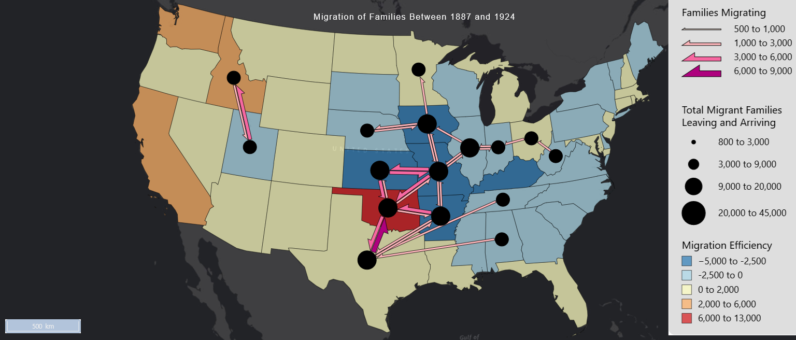

Flow Map:
Migration of Families Between 1887 and 1924

Map depicting the migration of families from 1887 and 1924. In general, flow is the greatest within the Midwest area. The flows tend to travel from the east further down into the southern United States, into Oklahoma and Texas. The state that attracted the most flows was Oklahoma, which had the highest number of families migrating into the state. It also had the highest netflow, meaning overall, more families moved into the state than out. Missouri sent the most flows and had the lowest netflow. Based on the size of the node and the flows surrounding Missouri, it looks like a lot of families traveled through the state but did not stay there.